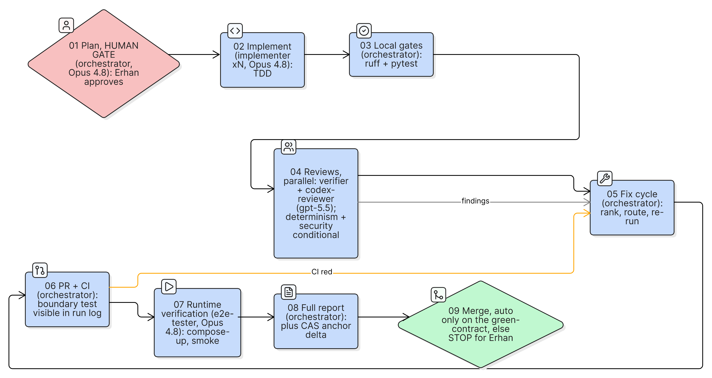
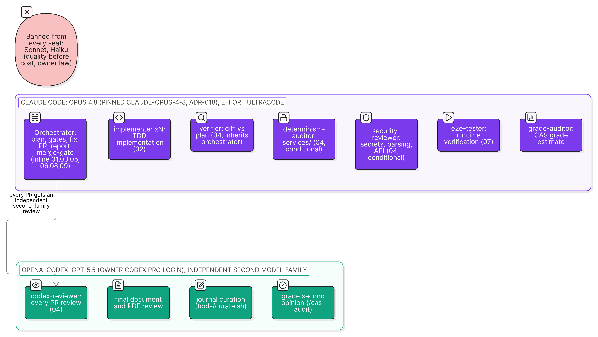
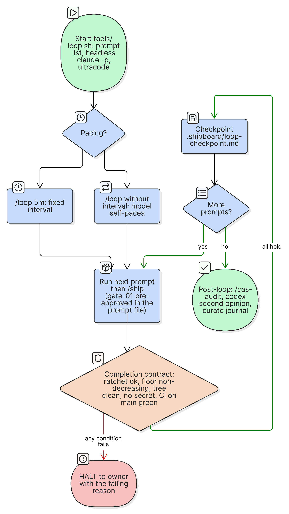
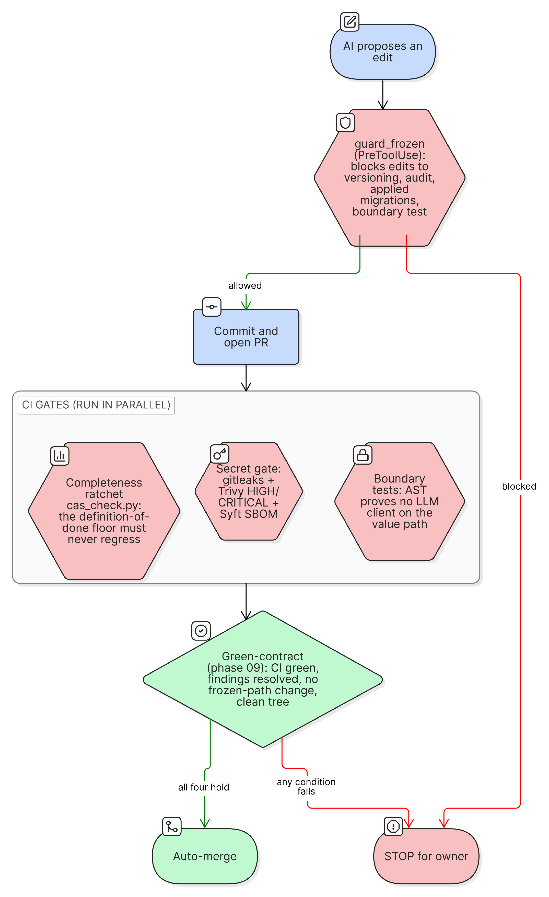
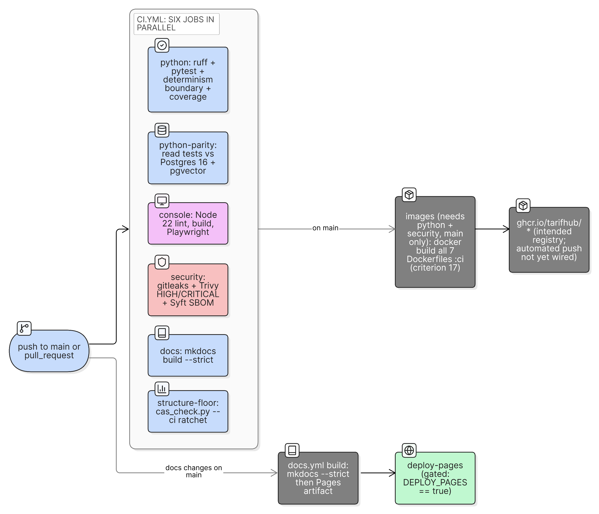
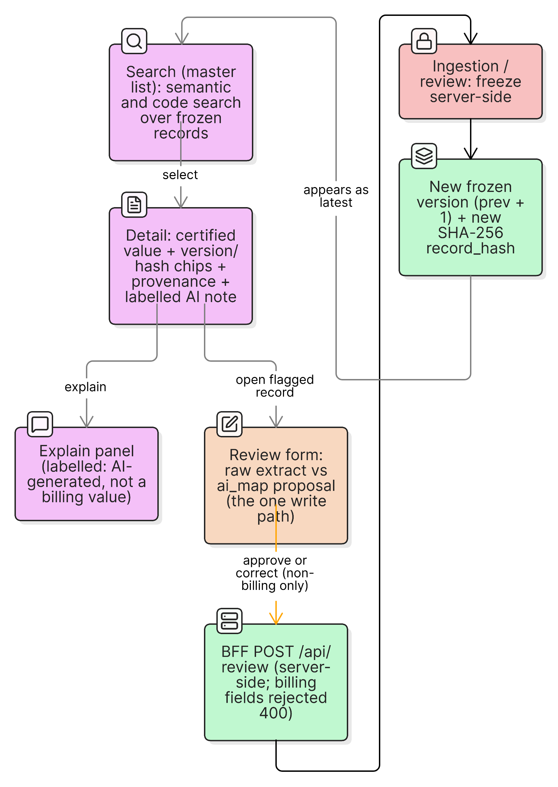
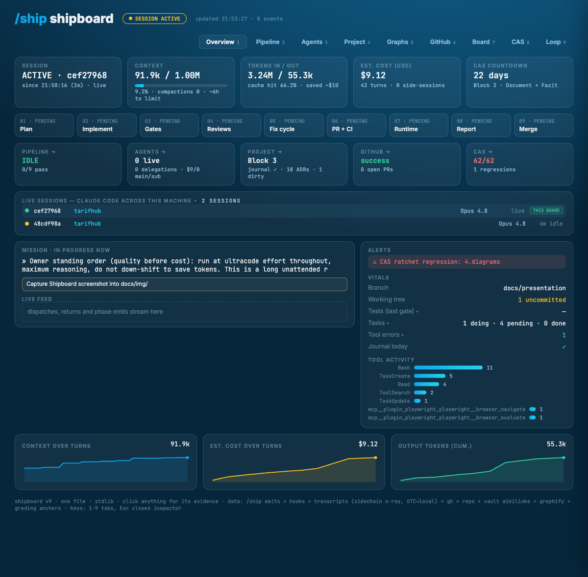

Swiss ambulatory tariff data, made trustworthy.
Erhan Ünlü · FFHS CAS AI-Assisted Software Engineering · June 2026
The problem
The vision
above · AI-assisted, pre-freeze
below · fully deterministic, read-only
The one rule
The development journey
The dev environment
Checked in, so every session starts from the same constraints.
How it was built

A process that outlives its model

The headline

The intellectual core

Quality and CI/CD

The result

TarifGuard console: search → frozen record → labelled AI explain panel.
By the numbers
What the AI got wrong: a scaffold once read the wrong field contract and rendered every value as a dash. No test caught it; reading both sides of the wire did.
Observable end to end

Shipboard: the live /ship pipeline, per-agent cost, and the structural-completeness floor. Captured while this deck was being built.
What I learned
An enforced, tested definition of done is what makes AI autonomy trustworthy.